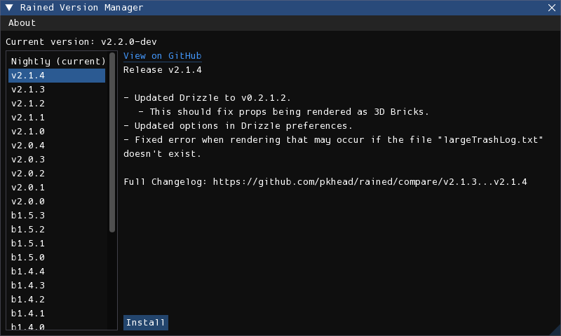

Updates
Rained should notify you of any new updates upon startup or in the About window. You may disable the update checker in the preferences window.
There are two methods of updating Rained: either automated using rainedvm, or manual.
rainedvm
rainedvm is a program that eases the process of updating Rained. Downloads are here: https://github.com/pkhead/rainedvm/releases
Inside the .zip or .tar.gz download is the executable rainedvm. Simply extract it and drop it in the Rained installation folder. When you want to update Rained, launch the executable and it should open a window that looks like this:

Select the version you want to upgrade (or downgrade) to and press the "Install" button. Installing a new version should take less than a minute.
If you launch Rained after updating and the windows are messed up, delete config/imgui.ini, select the version you are on in the version manager, and press "Sync", which replaces the "Install" button. This will reset the window configuration to the default for that version.
File conflicts
rainedvm will detect if you have modified any files (other than config/preferences and config/imgui.ini) and if that file had been changed in the new version, will ask you if you want to either overwrite the changes with the new version, or keep your file changes. On each prompt, if you want the file to be updated, select "Overwrite Changes". Otherwise, select "Keep Changes". You may also cancel the entire operation at that point by pressing the "Cancel" button.
Manual updating
If you want to update Rained manually, you should remove and replace all the files and folders from the installation folder EXCEPT:
- config/
- Your Data folder, if present
You should ensure that any potential changes you made in any files aren't accidentally overwritten. Additionally, if you open Rained after updating and the windows are messed up, you should either fix it or replace config/imgui.ini with the version from the new update.